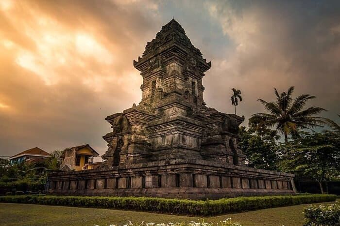
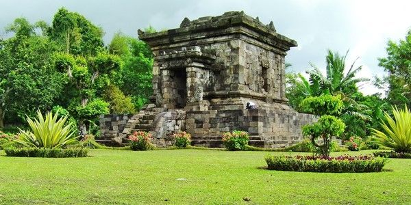
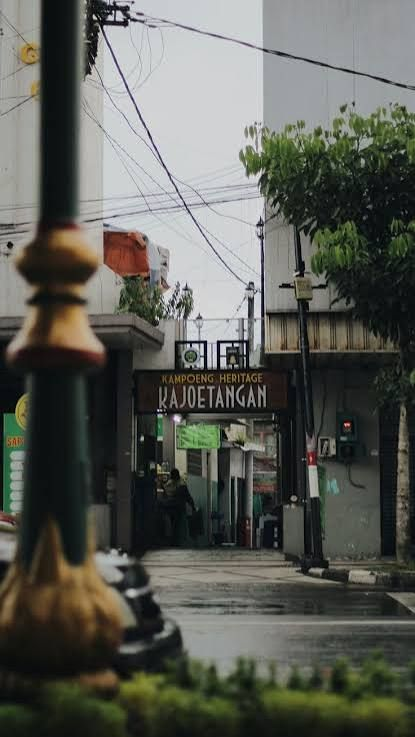
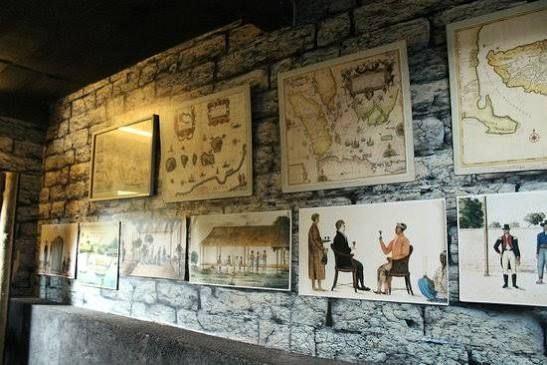
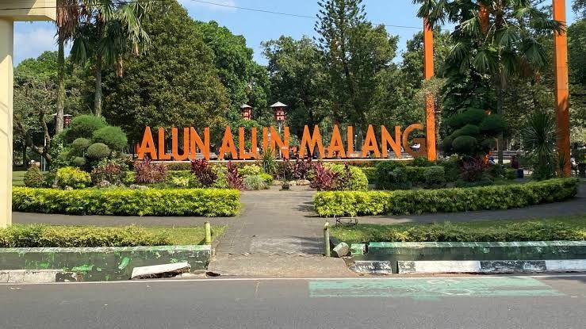
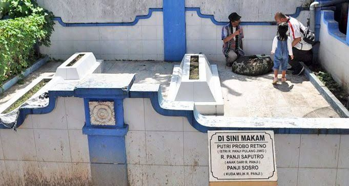

Sebaran titik situs sejarah dan kawasan budaya Malang. Pilih penanda pada peta atau daftar untuk melihat detailnya.

Kompleks candi peninggalan Kerajaan Singasari, terletak di Kecamatan Singosari.

Candi Hindu tertua di Malang, berada di kawasan Dau.

Kawasan kolonial bersejarah dengan bangunan-bangunan tua yang masih terawat.

Museum yang menyimpan arsip foto dan benda bersejarah kota Malang.

Pusat kota yang kerap menjadi lokasi pergelaran seni dan budaya masyarakat.

Kompleks pusara di kawasan Kepanjen yang diyakini terkait riwayat R. Panji: makam Putri Probo Retno (istri R. Panji Pulang Jiwo), R. Panji Saputro (putra R. Panji), dan Panji Sosro (kuda milik R. Panji). Situs ini belum masuk daftar resmi Cagar Budaya daerah.